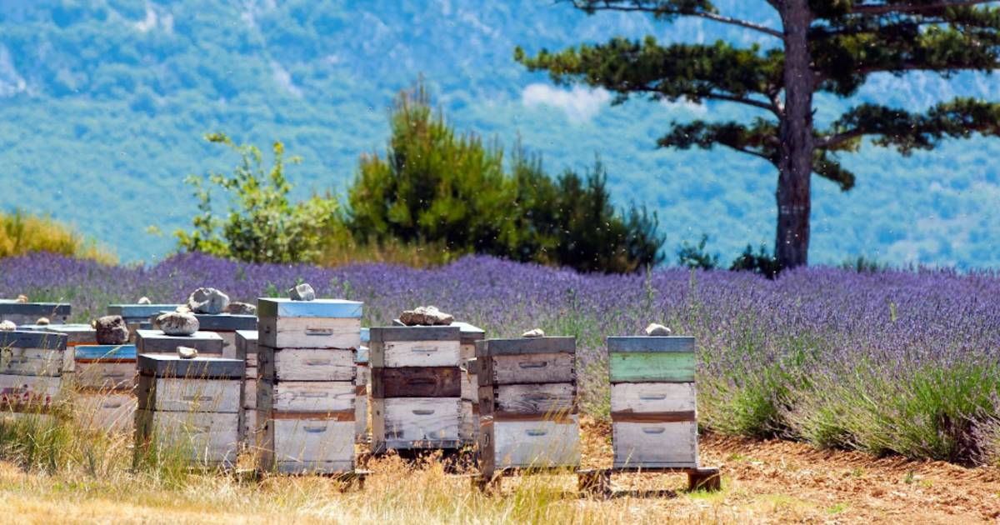

<!DOCTYPE html>
<html lang="fr">
    <head>
        <meta charset="UTF-8">
        <link href="style.css" rel="stylesheet">
       
    </body>
</html>
 <title>le_merveilleux_monde_des_abeilles</title>
    </head>
    <!-- Bonjour jeune Padawan, te voici dans le code source... -->
    <!--  Ici commence le corps du site (body) -->
    <body>
        <!--  header correspond à l'en tête du site, typiquement un bandeau en haut du site-->
        <header class="e">
            <!--  h1 est le titre le plus important dans la hierarchie, on peut aller jusqu'à h6-->
            <h1 align="center"> Le merveilleux monde des abeilles</h1>
            <h2 align="center"> Ce site est destiné à faire découvrir la vie des abeilles... et des apiculteurs!.</h2>
            <p align="center">(Mon site n'est pas vraiment sur le thème du numérique, mais quand j'ai vu que c'était ca le thème il était déja trop tard... Mais le plus important c'est de comprendre la programmation ;) , non? )</p>
            <!-- Un menu de navigation, c'est toujours utile. -->
            
            <nav>
                <h2> Menu </h2>
                <ul>
                    <li ><a href="page2.html" align="center">Les produits de la ruche </a></li>
                    <li ><a href="#deuxiemepartie" align="center">Lien vers la deuxième partie sur le calendrier des abeilles</a></li>
                    <li ><a href="page3.html" align="center"> L'importance des abeilles pour l'écosytème</a></li>
                </ul>
            </nav>
        </header>
        <!-- ici, je commence une section de mon site -->
        <section>
            <h2 align="center"> Les différents habitants d'une ruche</h2>
            <p align="center">Il existe trois castes chez les abeilles "domestiques": <strong>les ouvrières, les faux-bourdons (les mâles) et la reine.</strong></p>

            <!-- Je peux aussi ajouter une image -->
            
            
            <p align="center"><strong>Une abeille ouvrière</strong>. Une abeille peut avoir plusieurs fonctions selon son âge. Dès la fin de son stade larvaire, elle devient nettoyeuse et s'occupe de la propreté des cellules. Au bout de 5 ou 6 jours, elle se transforme en nourrice pour les larves pendant une durée d'environ 10 jours. Elle apporte la nourriture et les soins nécessaires aux larves.La phase suivante l'amènera à devenir architecte, construisant sans relâche les rayons. Vers l'âge de 18 jours, elle deviendra ventileuse pour assurer une bonne aération et un maintien optimal de la température dans la ruche. Cette fonction peut être assurée par des abeilles de tous âges selon les besoins.Entre 12 à 25 jours, l'abeille peut être gardienne. Postée devant la ruche, son rôle est de contrôler les entrées. Une fois la maturité nécessaire atteinte, vers 3 semaine d'âge, l'abeille peut se transformer en butineuse. Elle va alors à l'extèrieur de la ruche pour récolter le pollen et le nectar nécessaires à la vie de la colonie. Elle meurt d'épuisement après une vie d'environ 6 semaines.</p>
            
            <p align="center"><strong>Un faux-bourdon</strong>. Sa fonction principale est la fécondation de la reine. Il naît au printemps, et ressemble à une grosse abeille en plus poilu et plus sombre.</p>
            
            
            <p align="center"><strong>La reine.</strong> À la tête de la hiérarchie bien précise de la ruche se trouve la reine des abeilles. Plus grosse que les autres abeilles (jusqu'à 2 cm), elle est reconnaissable à son abdomen très développé. Elle est la seule a être capable de pondre dans la colonie et en masse ! En pleine saison, elle peut pondre jusqu'à 2000 œufs par jour. La reine peut vivre quatre à cinq ans.</p>

            <!-- Un lien vers un article externe -->
           
            <a href="apiculteur.ch/les-abeilles.html"> Cet apiculteur suisse nous en dit plus sur les castes des abeilles.</a>
            <br>
        </section>
        <section>
            <h2 id="deuxiemepartie" align="center" > La vie des abeilles et le travail de l'apiculteur tout au long de l'année</h2>
            
            <br>
            
            
            
            <p align="center"> En <strong>Janvier</strong> les abeilles restent dans leur ruche et consomment les réserves de miel. L'apiculteur n'a pas besoin d'ouvrir la colonie ce mois ci, il fait trop froid!</p>
           <iframe width="560" height="315" src="https://www.youtube.com/embed/_SpU8kMWFkI" frameborder="0" allow="accelerometer; autoplay; clipboard-write; encrypted-media; gyroscope; picture-in-picture" allowfullscreen></iframe>
           <br>

           <p align="center"> Pendant le mois de <strong>février</strong> les températures restent très basses, et les abeilles restent bien au chaud à l'intérieur de la ruche. Les premières fleurs fleurissent et les abeilles profitent des quelques belles journées pour butiner.</p>
           <iframe width="560" height="315" src="https://www.youtube.com/embed/tVXlv4EaQrY" frameborder="0" allow="accelerometer; autoplay; clipboard-write; encrypted-media; gyroscope; picture-in-picture" allowfullscreen></iframe>
           <br>

           <p align="center"> Au mois de <strong>mars</strong> la température s'adoucit, les arbres fleurissent partout et les colonies se développent grace aux récoltes des butineuses (nectar, pollen).</p>
           <iframe width="560" height="315" src="https://www.youtube.com/embed/CjW0vD3IfjM" frameborder="0" allow="accelerometer; autoplay; clipboard-write; encrypted-media; gyroscope; picture-in-picture" allowfullscreen></iframe>
           <br>

           <p align="center"> En <strong>avril</strong> les colonies d'abeilles sont en plein développement, et les grandes floraisons permettent à l'apiculteur d'agrandir l'espace de la ruche avec une ou plusieurs hausses en vue de récolter une partie du miel.</p> 
           <iframe width="560" height="315" src="https://www.youtube.com/embed/HdGrJQdDpwc" frameborder="0" allow="accelerometer; autoplay; clipboard-write; encrypted-media; gyroscope; picture-in-picture" allowfullscreen></iframe>
           <br>

           <p align="center"> Au mois de <strong>mai</strong> la ruche est au maximum. Les floraisons continuent, et l'apiculteur peut commencer à récolter les hausses que les abeilles ont rempli de miel. C'est aussi le mois de l'essaimage: certaines colonies d'abeilles vont se diviser naturellement pour assurer la survie de l'espèce.</p>
           <iframe width="560" height="315" src="https://www.youtube.com/embed/UkLfM_FKnEM" frameborder="0" allow="accelerometer; autoplay; clipboard-write; encrypted-media; gyroscope; picture-in-picture" allowfullscreen></iframe>
           <br>

           <p align="center"> En <strong>juin</strong> l'apiculeur continue à récolter le miel stocké dans les hausses, et la population d'abeilles va commencer doucement à décroitre. </p>
           <iframe width="560" height="315" src="https://www.youtube.com/embed/9qw6ZdieXeQ" frameborder="0" allow="accelerometer; autoplay; clipboard-write; encrypted-media; gyroscope; picture-in-picture" allowfullscreen></iframe>
           <br>

           <p align="center"> Pendant le mois de <strong>juillet</strong> la sécheresse raréfie les points d'eau disponibles, et c'est aussi le moment de surveiller les prédateurs des abeilles comme le frelon et ses parasites comme le varroa.</p>
           <iframe width="560" height="315" src="https://www.youtube.com/embed/Ci4bwhlOw4k" frameborder="0" allow="accelerometer; autoplay; clipboard-write; encrypted-media; gyroscope; picture-in-picture" allowfullscreen></iframe>
           <br>

           <p align="center"> En <strong>aout</strong> l'apiculteur commence à préparer ses ruches pour l'hivernage, en veillant à leur santé et à leurs réserves de miel.</p>
           <iframe width="560" height="315" src="https://www.youtube.com/embed/KusZ5yPjCMM" frameborder="0" allow="accelerometer; autoplay; clipboard-write; encrypted-media; gyroscope; picture-in-picture" allowfullscreen></iframe>
           <br>

           <p align="center"> En <strong>septembre</strong> les abeilles récoltent de quoi compléter leurs réserves de miel pour l'hiver, et l'apiculteur opère une dernière visite pour faire un point avant l'hiver.</p>
           <iframe width="560" height="315" src="https://www.youtube.com/embed/b5Ys1SxqQT8" frameborder="0" allow="accelerometer; autoplay; clipboard-write; encrypted-media; gyroscope; picture-in-picture" allowfullscreen></iframe>
           <br>

           <p align="center"> En <strong>octobre</strong> la baisse des températures annonce l'automne, et l'apiculteur peut encore renforcer les ruches avec du sirop pour compléter leurs réserves.</p>
           <iframe width="560" height="315" src="https://www.youtube.com/embed/PjGCzHvadLo" frameborder="0" allow="accelerometer; autoplay; clipboard-write; encrypted-media; gyroscope; picture-in-picture" allowfullscreen></iframe>
           <br>

           <p align="center"> En <strong>novembre</strong> les abeilles consomment leurs réserves de miel et l'apiculteur peut ranger son matériel en attendant la saison prochaine.</p>
           <iframe width="560" height="315" src="https://www.youtube.com/embed/Egf5eN8i9pM" frameborder="0" allow="accelerometer; autoplay; clipboard-write; encrypted-media; gyroscope; picture-in-picture" allowfullscreen></iframe>
           <br>

           <p align="center"> En <strong>décembre</strong> l'hiver commence: c'est une longue pause pour les abeilles qui vont continuer à consommer leurs réserves en attendant que la température leur permette de nouvelles sorties.</p>
           <iframe width="560" height="315" src="https://www.youtube.com/embed/Hg9pYgeadTw" frameborder="0" allow="accelerometer; autoplay; clipboard-write; encrypted-media; gyroscope; picture-in-picture" allowfullscreen></iframe>
           <br>
            </section>


     <footer>
            <p> Site réalisé par Augustin Flieller. </p>
    </footer>    
    </body>
   
</html>